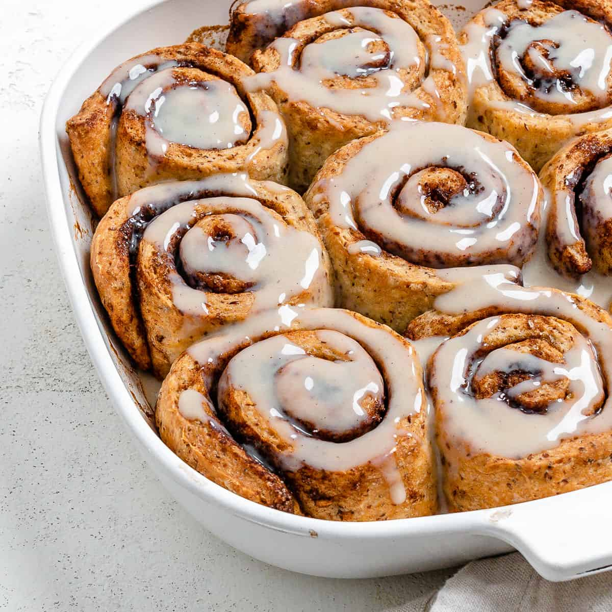

Cinnamon Rolls

Description
Sweet baked dough filled with a cinnamon-sugar filling.
One of my personal favorite snacks. Can be enjoyed at almost any time.
Ingredients
- Yeast
- Flour
- Sugar
- Salt
- Whole Milk
- Butter
- Egg
- Vanilla Extract
- Cinnamon
Steps
- Prepare the dough by mixing and stiring the yeast, milk, sugar, melted butter, and eggs.
- Knead and then rise the dough.
- Prepare the filling by mixing the softened butter, brown sugar, and cinnamon in a bowl.
- Roll out the dough then spread the filling evenly.
- Cut and seperate dough.
- Preheat at 350 degrees Fahrenheit then bake for 25-30 minutes until they are golden brown.
- Make the glazed frosting by mixing powdered sugar, melted butter, vanilla extract, and milk.
- Drizzle the frosting all over and enjoy!
Return